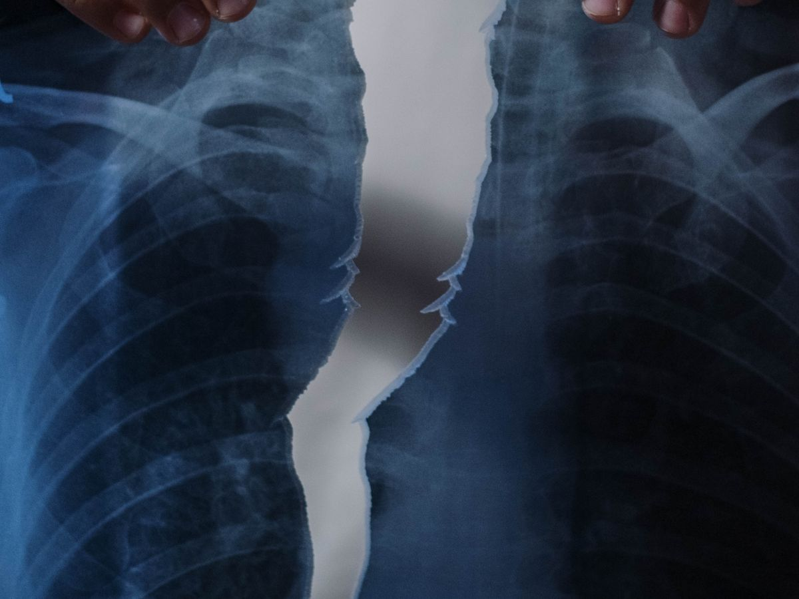

The lungs are surrounded by a thin protective lining called the pleura, and normally a very small amount of fluid exists between these layers to allow smooth movement during breathing. When excessive fluid collects in this space, it is known as pleural effusion.
As the amount of fluid increases, it can compress the lung and cause breathing difficulties. Pleural effusion itself is not a disease but often a sign of an underlying medical condition that requires proper evaluation.
At Healthy Chest & Sleep Clinic, Dr. Vishal Sharma provides expert evaluation and management of pleural effusion, helping identify the underlying cause and providing effective treatment to improve breathing and comfort.
Book a consultation
Patients with pleural effusion may experience any of the following. Some patients have very few symptoms and discover the condition during routine imaging.
Increasing difficulty breathing as fluid builds up
A persistent feeling of heaviness in the chest
Especially while breathing deeply
A cough that does not settle
Ongoing tiredness and low energy
Tiring quickly with physical activity
In severe cases breathing worsens when lying down
Pleural effusion can occur due to several underlying conditions. Identifying the exact cause is the most important step in successful treatment.
A common cause of fluid around the lungs.
Infections affecting the lungs and pleural space.
A frequent cause of fluid accumulation.
Systemic conditions that lead to fluid build-up.
Malignancy affecting the lungs and pleura.
Inflammatory conditions affecting the body.
A clot affecting the lungs' blood supply.
Fluid that develops following surgery.
Simply removing the fluid is often not enough. Our focus is not only on relieving symptoms but also on determining why the fluid developed in the first place.
A comprehensive review of symptoms, medical history, imaging findings and associated health conditions.
Evaluation may include chest X-ray, ultrasound, CT scan review and previous medical records.
In selected cases, fluid may be examined to check for infection, tuberculosis, malignancy or inflammation.
Treatment depends entirely on the underlying diagnosis and severity of the condition.
Some patients may develop large fluid collections that significantly affect breathing. The decision is based on clinical findings and imaging results.
Draining excess fluid eases breathing difficulty.
Relieving the heaviness and pressure in the chest.
Allowing the lung to expand more fully.
Drained fluid can aid in identifying the underlying cause.
Extensive experience in evaluating complex respiratory conditions and pleural diseases.
Understanding why fluid has accumulated rather than simply treating symptoms.
Evaluation, diagnosis, treatment planning and long-term follow-up under one roof.
Clear communication and personalised treatment recommendations based on individual needs.
If you have been diagnosed with fluid around the lungs or are experiencing unexplained breathlessness, consult Dr. Vishal Sharma for a comprehensive evaluation and personalised treatment plan that helps prevent complications.